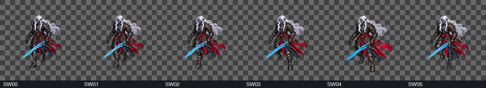

DRAFT, direção visual das seis revisões aceita em2026-10-17; retenções técnicas preservadas. Plano de6PNGs/18chamadas máximas aprovado;6fontes selecionadas em13chamadas. SW04v03 e demaisv02. A mudança de método busca resolver o conflito de mão/direção da folhaP9 doLOT16. Preparação e implementação continuam com Claude.
Comece pelo braço da espada: ombro/cotovelo/mão no lado direito da imagem nesta vista frontal, lâmina cruzando baixa para a esquerda, outra mão vazia. Depois compare contatosSW00/SW03, intermediários e retornoSW05→SW00. A observação do modelo é favorável à empunhadura; seu aceite visual das seis revisões está registrado porhash.
Registro, escala e cadência ainda precisam de revisão. SW04v03 atingiu o limite de três tentativas e é a pose de maior variação de contorno. Não importar diretamente nem considerar a P9 antiga liberada por esta galeria. A nova candidata ainda não foi admitida.
Canvas integral1254×1254 em todas as poses, sem alinhamento oculto. Zero contato alfa≥16 na banda4px; margens mínimas123..183px, acima do alvo64px. Alfa modal253 e resíduos de baixa opacidade. Spread da base do núcleo60px, centroX48px e largura114px. Bbox inclui espada/cabelo/faixa e não prova pivô, altura anatômica ou ausência de patinar.
Entrega para Claude · Seleção e origens · Medidas · Tentativas/retenções · 13 prompts · Referências · Controles offline · Integridade/contrato · LOT16 anterior

5/10FPS servem à comparação visual e não alteram o jogo. Controles verificados por simulação DOM offline, sem certificação de render real/fluidez. Aceite por revisão/hash registrado; retenções técnicas preservadas. Sem implementação, playtest ou CANON. Commit local autorizado; push não autorizado.